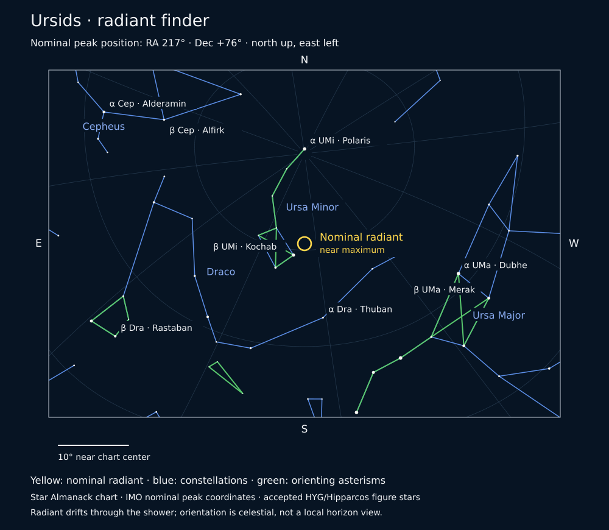

Ursids · 2025
Nominal peak: . Radiant in Ursa Minor; reference ZHR ≈ 10. Moon 5% illuminated at peak.
Use a dark site, allow 20–30 minutes for dark adaptation, and observe with the unaided eye. Watch a broad area of sky rather than staring directly at the radiant.
The radiant is the direction from which shower meteors appear to spread. Watch a broad area of sky. A high radiant, darkness, and a clear sky matter more than watching at the exact nominal peak time.
ZHR is an ideal-condition reference rate, not a prediction of how many you will see. Moon interference also depends on whether the Moon is above your horizon.
Open the wide-field radiant finder
Find the radiant

Nominal peak radiant coordinates: IMO 2026 Calendar, Table 5 (page 25). These seasonal reference positions are reused for the annual shower; daily radiant drift is not modeled. Star positions and accepted Martz/MacRobert figures use the Almanack’s cached HYG/Hipparcos data.
Calculated seasonal marker
Solar longitude: 270.7°. The published clock retains the calculation’s precision; it does not imply that the physical shower maximum is known to the second.
Plan your observing
Convert both the date and time from UTC to your local time. Choose a dark observing period when the radiant is above the horizon; the nominal peak can occur during your daylight. Meteors can appear away from the radiant. Use your unaided eyes to cover more sky, dress for the temperature, and give yourself time to watch.
Open this week in the Almanack · Download calculation record (JSON)